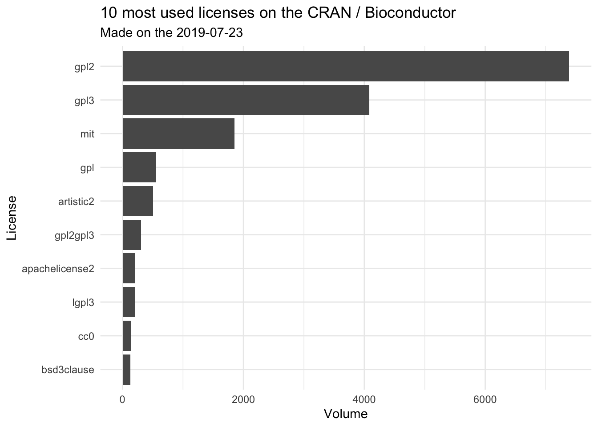
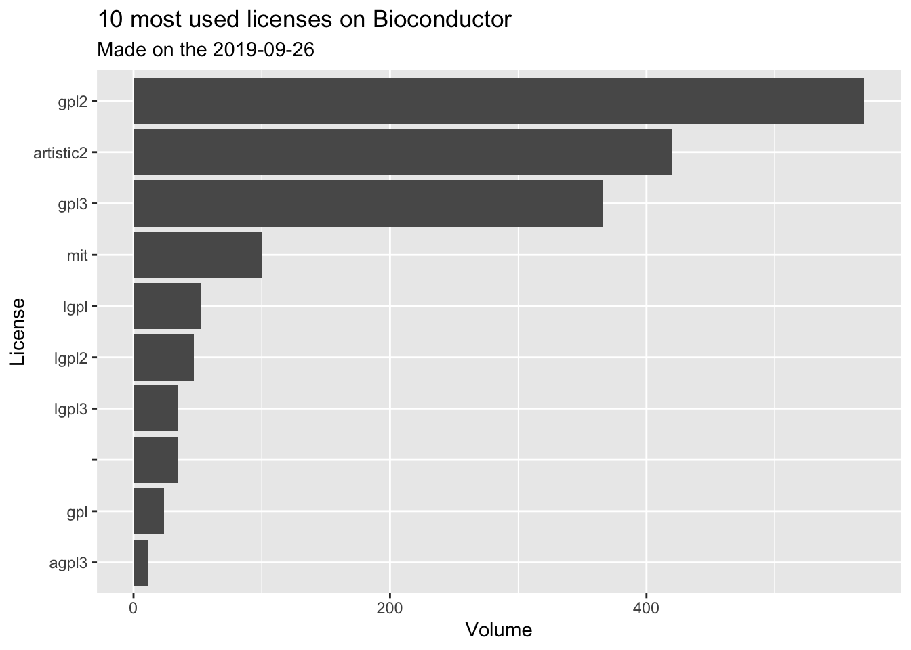

Chapter 1 Introduction
Disclaimer: This book is by no mean a legal book and should not be used as such. This book aims at helping you decipher the complexity of open source licenses, but if you have legal concerns and questions about open source licenses, please refer to a professional lawyer.
1.1 Diving into the CRAN & BioConductor database
Before going deeper into the licenses, let’s first have a look into the licenses currently used on CRAN & BioConductor.
library(tidyverse)
theme_set(theme_minimal())Note: this version has been compiled on :
Sys.time()## [1] "2019-07-23 13:00:18 CEST"1.1.1 Get all the packages
First, let’s get a list of all the packages.
We’ll extract the list of packages from CRAN using the CRAN_package_db() function from {tools}, and the ones from BioConductor by reading the file at "https://bioconductor.org/packages/release/bioc/src/contrib/PACKAGES". These two datasets contain the metadata about the packages, as they are provdided in the DESCRIPTION file.
# Getting the DB
cran_db <- tools::CRAN_package_db() %>%
thinkr::clean_names() %>%
mutate(src = "cran")
bioc_db <- read.dcf(url("https://bioconductor.org/packages/release/bioc/src/contrib/PACKAGES")) %>%
as.data.frame() %>%
thinkr::clean_names() %>%
mutate(src = "bioc")
full_db <- bind_rows(cran_db, bioc_db)These two lists contain:
- 14604 packages from CRAN
- 1735 packages from BioConductor
So a total of 16339 packages.
1.1.2 Data cleansing
Let’s now select the columns of interest: the ones containing the informations about licenses, and have a look at the 6 first rows of the result.
db <- full_db %>%
select(package, contains("license"), src)
head(db) 1.2 Extracting information
1.2.1 Counting the licenses
# Number of licences
n_licence <- db %>%
distinct(license) %>%
count() %>%
pull(n)In our dataset, we can find 177 different licences.
# Number of licences with 'file'
db <- db %>%
mutate(has_file_license = str_detect(license, "file"))
n_has_file_license <- db %>%
count(has_file_license)
n_file <- n_has_file_license %>%
filter(has_file_license) %>%
pull(n)Out of these 16339 packages, 2676 contain a licence file — see #TODO add ref for more info about adding licence files.
1.2.2 Packages with non-foss / restrictive-use licenses
The dataset also contains a column called license_is_foss and one called License_restricts_use.
Fields ‘License_is_FOSS’ and ‘License_restricts_use’ may be added by repositories where information cannot be computed from the name of the license. ‘License_is_FOSS: yes’ is used for licenses which are known to be FOSS, and ‘License_restricts_use’ can have values ‘yes’ or ‘no’ if the LICENSE file is known to restrict users or usage, or known not to.
license_is_foss <- db %>%
count(license_is_foss) %>%
drop_na()The license_is_foss (Free Open Source Software) column is not that much informative, as only 13 packages have provided it. But what can be interesting is the 1 package(s) that contains a non-foss license:
full_db %>%
filter(license_is_foss == "no") %>%
select(package, license, src)We’ll get back on this license in #TODO add ref.
license_restricts_use <- db %>%
count(license_restricts_use) %>%
drop_na()Let’s now have a look at the license_restricts_use column from the dataset. Few packages (2) have this field filled in their DESCRIPTION. Just as before, it can be interested to have a look at the packages that have do restrict the use.
- All the packages with a licence that restricts the use
db %>%
filter(license_restricts_use == "yes") %>%
select(package, license, src)- And if we want to have a look at the number of each of these licenses:
db %>%
filter(license_restricts_use == "yes") %>%
count(license, sort = TRUE)As we can see, the majority of packages with a licence that restricts the use are based on a license file.
system.file("LICENSE", package = "rngwell19937") %>%
readLines() %>%
glue::as_glue()## This code can be used freely for personal, academic, or non-commercial purposes.
##
## For commercial purposes, see the conditions formulated in file rngwell19937/src/WELL19937a.c.system.file("LICENSE", package = "gpclib") %>%
readLines() %>%
glue::as_glue()## Free for non-commercial use; commercial use prohibited (see the files
## `gpc.c' and `gpc.h' for details)We’ll get back on this license in #TODO add ref.
1.3 Getting a more global idea
There are several ways to insert a license :
- It can be restricted to precise version (e.g.
GPL-3) - It can be “at least” a version (e.g.
GPL (>= 2)) - It can be two licenses (e.g.
GPL-2 | GPL-3) - It can be accompanied with a LICENSE file (e.g.
LGPL-3 | file LICENSE)
Also, the license number can be either a number or a number + a zero (e.g GPL (>= 2.0)). So far, we have counted the number of different licenses based on a strict match of characters. So GPL (>= 2.0) and GPL (>= 2) are counted as two different licenses.
In order to get a broader idea, we’ll clean this column so that we can gather the licenses together.
cleaner <- compose(
# Removing the file license elements
~ gsub("filelicense", "", .x),
~ gsub("filelicense", "", .x),
# Removing empty spaces
~ gsub(" ", "", .x),
# Removing all non-alpha numeric character
proustr::pr_keep_only_alnum,
# Removing the .0 at the end of numbers
~ gsub("\\.0", "", .x),
tolower
)
db <- db %>%
mutate(clean_license = cleaner(license))
db %>%
count(clean_license, sort = TRUE)As you can see, we now have 105, while we originally had 177 different licenses.
Note: this process was designed to have a broad overview of the licenses, and gathered together the GPL (>= 2.0) and GPL-2 for example. It’s designed more as a tool for general overview.
1.3.2 The 10 most frequent licenses?
Let’s see which are the 10 most frequent licenses:
db %>%
count(clean_license, sort = TRUE) %>%
top_n(10)## Selecting by n1.4 A visual representation of the licenses
db %>%
count(clean_license, sort = TRUE) %>%
top_n(10, n) %>%
ggplot(aes(reorder(clean_license, n), n )) +
geom_col() +
coord_flip() +
labs(
title = "10 most used licenses on the CRAN / Bioconductor",
subtitle = glue::glue("Made on the {Sys.Date()}"),
x = "License",
y = "Volume"
) 
db %>%
filter(src == "cran") %>%
count(clean_license, sort = TRUE) %>%
top_n(10, n) %>%
ggplot(aes(reorder(clean_license, n), n )) +
geom_col() +
coord_flip() +
labs(
title = "10 most used licenses on the CRAN",
subtitle = glue::glue("Made on the {Sys.Date()}"),
x = "License",
y = "Volume"
) db %>%
filter(src == "bioc") %>%
count(clean_license, sort = TRUE) %>%
top_n(10, n) %>%
ggplot(aes(reorder(clean_license, n), n )) +
geom_col() +
coord_flip() +
labs(
title = "10 most used licenses on Bioconductor",
subtitle = glue::glue("Made on the {Sys.Date()}"),
x = "License",
y = "Volume"
) 